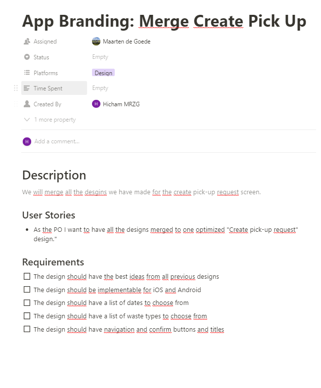
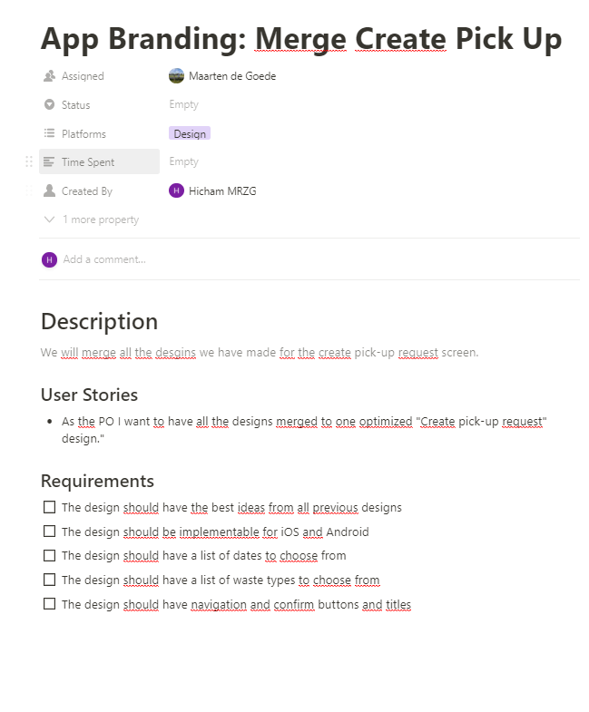

Analyseren
Leerdoel 1:
Ik wil na afloop van mijn stage requirements kunnen opstellen voor een user story waar een feature aan moet voldoen.
Bewijslast
Als bewijslast zal ik de volgende screenshot delen, waar ik laat zien hoe ik een user storie heb gedefinieerd. De user stories worden gedefinieerd op de website Notion.se. Waar alle taken zichtbaar zijn voor de sprint.

Figuur 1
Figuur 2
Feedback
Ik heb een Google formulier gemaakt, dat ik heb gedeeld met mijn collega’s om mij feedback te geven over mijn user stories. Ik heb hen de volgende vragen gesteld: “Wat denk je dat de scrum master goed heeft gedaan met het definiëren van de user stories?”, “Wat denk je dat de scrum master beter had kunnen doen met het definiëren van de user stories?” Tenslotte vraag ik hen om mij een cijfer te geven van hoe duidelijk de users stories gedefinieerd waren.
Figuur 3
Figuur 4
Figuur 5
Zelfreflectie
Mijn collega’s waren over het al gemeen tevreden over de user stories die ik heb gedefinieerd, dit is ook terug te zien in de cijfers die ik heb gekregen. Het laagste cijfer is een 6. Zoals te lezen in de feedback is het bedrijf, niet heel consistent geweest met het opstellen van user stories. Het bedrijf is een start-up en er wordt met haast gewerkt, wat er voor zorgde dat veel user stories die we hadden alleen bestonden uit een zin en met of het platformzijde, main of backend is. Maar toen ik de scrum master mocht zijn heb ik besloten om de user stories duidelijker te definiëren met criteria en een kort beschrijving. Een tip die terug te lezen is in de feedback van wat er beter kan, is dat ik de user stories moet definiëren als een feature voor een gebruiker van de app. Ik heb dit natuurlijk toegepast bij het opstellen van mijn volgende user stories. Ik heb er twee uitkozen om aan te tonen dat ik de feedback heb verwerkt.
Figuur 6
Figuur 7
Als bewijslast zal ik de volgende screenshot delen, waar ik laat zien hoe ik een user storie heb gedefinieerd. De user stories worden gedefinieerd op de website Notion.se. Waar alle taken zichtbaar zijn voor de sprint.

Feedback
Ik heb een Google formulier gemaakt, dat ik heb gedeeld met mijn collega’s om mij feedback te geven over mijn user stories. Ik heb hen de volgende vragen gesteld: “Wat denk je dat de scrum master goed heeft gedaan met het definiëren van de user stories?”, “Wat denk je dat de scrum master beter had kunnen doen met het definiëren van de user stories?” Tenslotte vraag ik hen om mij een cijfer te geven van hoe duidelijk de users stories gedefinieerd waren.
Figuur 3
Figuur 4
Figuur 5
Zelfreflectie
Mijn collega’s waren over het al gemeen tevreden over de user stories die ik heb gedefinieerd, dit is ook terug te zien in de cijfers die ik heb gekregen. Het laagste cijfer is een 6. Zoals te lezen in de feedback is het bedrijf, niet heel consistent geweest met het opstellen van user stories. Het bedrijf is een start-up en er wordt met haast gewerkt, wat er voor zorgde dat veel user stories die we hadden alleen bestonden uit een zin en met of het platformzijde, main of backend is. Maar toen ik de scrum master mocht zijn heb ik besloten om de user stories duidelijker te definiëren met criteria en een kort beschrijving. Een tip die terug te lezen is in de feedback van wat er beter kan, is dat ik de user stories moet definiëren als een feature voor een gebruiker van de app. Ik heb dit natuurlijk toegepast bij het opstellen van mijn volgende user stories. Ik heb er twee uitkozen om aan te tonen dat ik de feedback heb verwerkt.
Figuur 6
Figuur 7
Mijn collega’s waren over het al gemeen tevreden over de user stories die ik heb gedefinieerd, dit is ook terug te zien in de cijfers die ik heb gekregen. Het laagste cijfer is een 6. Zoals te lezen in de feedback is het bedrijf, niet heel consistent geweest met het opstellen van user stories. Het bedrijf is een start-up en er wordt met haast gewerkt, wat er voor zorgde dat veel user stories die we hadden alleen bestonden uit een zin en met of het platformzijde, main of backend is. Maar toen ik de scrum master mocht zijn heb ik besloten om de user stories duidelijker te definiëren met criteria en een kort beschrijving. Een tip die terug te lezen is in de feedback van wat er beter kan, is dat ik de user stories moet definiëren als een feature voor een gebruiker van de app. Ik heb dit natuurlijk toegepast bij het opstellen van mijn volgende user stories. Ik heb er twee uitkozen om aan te tonen dat ik de feedback heb verwerkt.